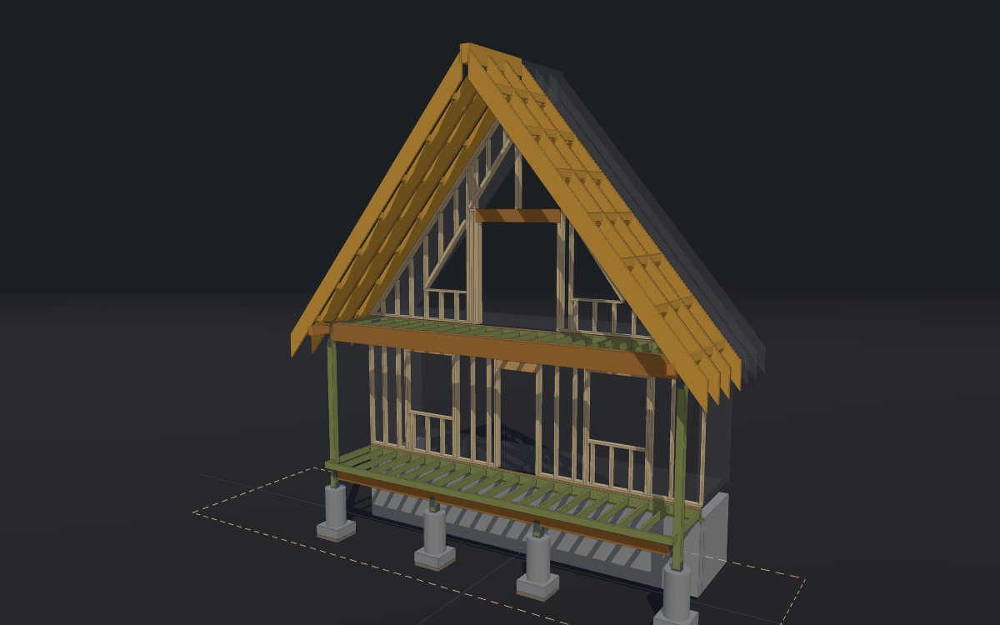

Front porch, upper deck and roof
South end. The 5'-0" entrance porch on four posts, the two as-built glulams spanning the corner posts, the ~15:12 gable carried 6'-0" past the wall, and the outlooker-ladder concept for the last 2' of rake beyond the short ridge beam.